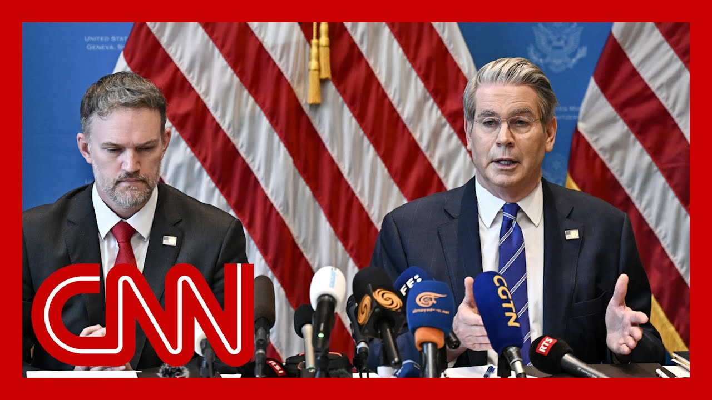

【美中同意在90天内互相降低关税】
Summary: The US and China announce a temporary tariff reduction agreement, marking a major breakthrough in their trade war after talks in Switzerland, with global markets reacting positively.
摘要： 美中宣布临时降低关税协议，标志着两国在瑞士会谈后贸易战的重大突破，全球市场反应积极。

⏱️ Estimated Reading Time: 17 min
This is CNN breaking news and the breaking news this morning, a major breakthrough in the trade war between the United States and China.
这是CNN突发新闻，今早的突发新闻，美中贸易战取得重大突破。
The two sides making a surprise announcement after a weekend of talks in Switzerland.
双方在瑞士进行周末会谈后意外宣布了这一消息。
Under the agreement unveiled by the Treasury Secretary, Scott.
根据财政部长斯科特公布的协议。
And for 90 days, the U.S. is going to cut its tariffs on Chinese goods from 145%, down to 30%, and China will cut its levies on U.S. imports from 125% to ten.
在90天内，美国将把对中国商品的关税从145%降至30%，中国则将美国进口商品的关税从125%降至10%。
During these 90 days, then the countries say that the negotiations continue.
在这90天内，两国表示将继续谈判。
Global markets are cheering the news, UX, U.S. stock futures.
全球市场对此消息表示欢迎，美国股指期货上涨。
They are.
确实如此。
We'll take a look at that way up ahead of the opening bell on Wall Street.
我们将在华尔街开盘前进一步观察。
After weeks of wild volatility that we've all been experiencing and covering over President Trump's tariffs, which have disrupted supply chains and raised recession fears.
在经历了数周因特朗普总统关税政策引发的剧烈波动后，供应链中断和经济衰退担忧加剧。
President Trump will likely be asked about all of this when he signs an executive order later this morning that, he says will be to lower prescription drug prices.
特朗普总统今早签署一项旨在降低处方药价格的行政命令时，可能会被问及此事。
Let's get over to the white House right now.
现在让我们转向白宫。
CNN's Alina Tareen is standing by.
CNN的Alina Tareen正在待命。
Break it. Break all of this down for us right now as we know it so far.
请为我们详细解析目前已知的情况。
Alina.
Alina。
Okay. I mean, this is a major breakthrough between the United States and China from these following these talks in Geneva this weekend, the Treasury Secretary, Scott Bastian, announced in a 3 a.m. press conference that both countries have agreed to dramatically scale back these tariffs for at least 90 days.
好的，这是美中两国在日内瓦会谈后的重大突破，财政部长斯科特·巴斯蒂安在凌晨3点的新闻发布会上宣布，两国同意大幅降低关税至少90天。
Now, we're expected to see these tariffs be rolled back starting May 14th.
预计这些关税将从5月14日开始降低。
That's just two days from now.
距离现在仅剩两天。
And I want to reiterate how you laid this out.
我想重申一下您刚才的表述。
So essentially, the United States is going to temporarily lower its overall tariffs on Chinese goods from 145% to 30%, while China is going to roll back its tariffs on American imports from 125% to 10%.
本质上，美国将暂时把对中国商品的总体关税从145%降至30%，而中国则将美国进口商品的关税从125%降至10%。
And, Kate, I cannot overstate enough how big of a change this is, particularly from a white House that has really tried to make China, the key part of this broader tariff policy that the president has put forth, despite having lowered tariffs on all other countries, really, China has been increasingly the one country that they wanted to kind of make an example out of.
Kate，我无法强调这一变化有多大，尤其是对于一个真正试图将中国作为其更广泛关税政策核心的白宫来说，尽管对其他国家的关税有所降低，但中国确实是他们想要“杀鸡儆猴”的国家。
And just days ago, I'd remind you that the president was saying, continuing this trade war with China was good policy because it essentially meant the United States wasn't losing money to Beijing.
就在几天前，总统还表示继续与中国打贸易战是好的政策，因为这本质上意味着美国没有向北京输钱。
Now, I think, you know, just taking into all of this into account is even more notable when you recognize that this weekend, the talks in Geneva between the United States and China were the first time the two sides really, got together and actually talked about this, not even just face to face, but even over the phone to hash out some of these details and try to find some sort of off ramp to the escalating trade war.
现在，考虑到这一切，更值得注意的是，这个周末美中在日内瓦的会谈是双方第一次真正聚在一起讨论此事，不仅是面对面，甚至通过电话敲定细节，试图为不断升级的贸易战找到某种“出口”。
Now already, Kate, we are hearing from this administration much friendlier rhetoric toward China, much more positive, an optimistic view of how we're going to be moving forward in a United States Chinese relationship.
Kate，我们现在已经听到政府对中国更友好的言辞，对美中关系未来发展的更积极、乐观的看法。
and Scott Bastian kind of highlighted that during the press conference when he said that neither country wants a decoupling.
斯科特·巴斯蒂安在新闻发布会上强调了这一点，他说两国都不希望“脱钩”。
Listen to how he put it.
听听他是怎么说的。
The consensus from both delegations this weekend is neither side wants a decoupling.
本周末双方代表团的共识是，任何一方都不希望脱钩。
And what had occurred with these very high tariffs, as ambassador said, was an import the equivalent of an embargo.
正如大使所说，这些高关税实际上等同于禁运。
And neither side wants that.
双方都不希望这样。
Now, Kate, as you mentioned, we're already seeing global markets, kind of buoyed by this news.
Kate，正如你提到的，全球市场已经因这一消息而提振。
And there's no doubt that the president and this white House are going to spin this deal as a major win for them.
毫无疑问，总统和白宫将把这项协议宣传为他们的一大胜利。
But again, I just want to highlight how big of a deal this is and how much of a change in posture this is from the Trump administration.
但我想再次强调，这是多么重大的事件，以及特朗普政府的态度发生了多大的转变。
particularly again, given their repeated insistence on needing to hold China accountable now.
尤其是考虑到他们此前一再坚持需要“让中国负责”。
And I also think, just to make clear that the inflationary reaction we've seen to some of the president's tariff policies, particularly as it relates to China, and also, you know, the economic concerns overall, the impact of his tariffs on the markets that definitely played a role in all of this.
我还想明确一点，我们对总统某些关税政策（尤其是针对中国的政策）的通胀反应，以及整体经济担忧和关税对市场的影响，确实在这一切中发挥了作用。
Okay, Elena, thank you very much.
好的，Elena，非常感谢。
Much more to learn about all of this this morning.
今早还有很多关于此事的细节需要了解。
Still Sarah.
还有Sarah。
All right. The agreement between the U.S. and China, of course, having a ripple effect, as you just heard, mentioned around the world, the markets in Asia surging on the news.
好的。正如你刚才提到的，美中协议正在全球范围内产生连锁反应，亚洲市场因此消息大涨。
CNN's Mark Seward joining us now from Beijing.
CNN的Mark Seward现在从北京加入我们。
I'm just curious about this, because what you're hearing from one side here in the United States is that this is a major win, a major agreement, but there is a huge capitulation on the part of the United States here.
我对此很好奇，因为在美国这边听到的是这是一次重大胜利、重大协议，但美国方面实际上做出了巨大让步。
How did this agreement come together so quickly?
这项协议是如何如此迅速达成的？
Well, Sarah, I think a big part of it is just necessity, because look at the economic upheaval it's caused around the world.
Sarah，我认为很大程度上是出于必要性，看看它在全球引发的经济动荡。
In the United States, there's been a lot of concern about supply chains here in China.
在美国，人们对供应链有很多担忧，而在中国，制造业开始受到影响。
Manufacturing was beginning to take a hit.
制造业开始受到影响。
It doesn't look good when the world's first and second largest economies are fighting with each other.
世界第一和第二大经济体互相争斗看起来并不好。
And then this door opened and both sides felt it was ripe for conversation.
然后这扇门打开了，双方都觉得是时候对话了。
And as we have seen, markets really like what they are seeing.
正如我们所看到的，市场非常喜欢他们看到的情况。
If we look at the big boards, if you look in the United States at U.S. stock futures, we're seeing gains across the board, including the S&P 500.
如果我们看看大盘，在美国，美国股指期货全面上涨，包括标普500指数。
That's important because that's where so many of our retirement accounts are based upon.
这很重要，因为我们的许多退休账户都基于此。
And then here in Asia, as you mentioned, big gains as well.
而在亚洲，正如你提到的，也有大幅上涨。
We saw the Hang Seng in Hong Kong up by more than 3%.
我们看到香港恒生指数上涨超过3%。
But with all of this so-called celebration, if you will, there is a lot of caution.
但在所有这些所谓的“庆祝”中，也存在很多谨慎。
China has been very measured in its response.
中国的反应非常谨慎。
It's seen this very much as a first step.
他们将其视为第一步。
And that's reflected in some of the statements we are hearing from the country's leadership, including China's vice premier.
这反映在我们听到的中国领导层的一些声明中，包括中国副总理的讲话。
Let's listen to some of his remarks from earlier in Geneva.
让我们听听他早些时候在日内瓦的一些讲话。
We're going to promote new development in the China-U.S. trade and economic relations, and inject more certainty and stability into the world economy.
我们将推动中美经贸关系新发展，为世界经济注入更多确定性和稳定性。
China's position towards this trade war has been clear and consistent.
中国对这场贸易战的立场是明确和一贯的。
And that is China doesn't want to fight a trade war because trade wars produce no winners.
那就是中国不想打贸易战，因为贸易战没有赢家。
But if the U.S. insists on forcing this war upon us, China will not be afraid of it, and we'll fight to the end.
但如果美国执意将这场战争强加给我们，中国不会害怕，并将战斗到底。
So perhaps the most important takeaway in all of this is that there is now a vehicle of conversation between these two nations that did not exist before.
因此，也许这一切中最重要的收获是，现在两国之间有了一种以前不存在的对话机制。
China wanted to see respect from the United States.
中国希望看到美国的尊重。
This seems to fall in line with those demands, Sarah.
这似乎符合这些要求，Sarah。
Certainly does.
确实如此。
China pointing out that the trade war was begun by Donald Trump.
中国指出贸易战是由特朗普发起的。
Mark Stewart, thank you so much for all your great reporting there from Beijing.
Mark Stewart，非常感谢你从北京发来的精彩报道。
So even though I gave this description that makes it sound like it's kind of a done deal, the New York Post sets me straight saying it is a Swiss cheese.
尽管我的描述听起来像是已经敲定的协议，但《纽约邮报》纠正我说这是“瑞士奶酪”协议。
indicating that they're not fully sold, that this deal is done, but the details are going to come out.
表明他们并不完全相信协议已经完成，细节还有待公布。
Steven, what are you looking for?
Steven，你在关注什么？
I think this is the Treasury secretary.
我认为这是财政部长。
Right?
对吧？
It is a reset, but it's a reset from the situation that the president created in the first place.
这是一次重置，但这是对总统最初制造的局面的重置。
he's going to declare this a big victory because they'll still be a 30% tariff.
他会宣布这是一次重大胜利，因为关税仍将维持在30%。
He believes in tariffs.
他相信关税。
Tariffs bring in, money to the Treasury.
关税为国库带来收入。
Yeah.
是的。
And the numbers have been so high that 30% seems low, even though 30% is still really high.
之前的数字太高了，以至于30%看起来很低，尽管30%仍然很高。
The question here is, is 30% tariff sufficient to bring back manufacturing and jobs to the United States?
问题是，30%的关税是否足以将制造业和工作岗位带回美国？
Have gone to low wage economies abroad, probably not over the long term.
流向国外低工资经济体的产业，长期来看可能不会回来。
Secondly, even if some companies assume the cost of some of those tariffs, if we all end up paying more for Chinese imports, then the consumer is going to be worse off.
其次，即使一些公司承担了部分关税成本，如果我们最终为中国进口商品支付更多，消费者将变得更糟。
So you have to ask the question of has the president simply solved a crisis that he created himself and left us in a worse position?
因此，你必须问一个问题：总统是否只是解决了他自己制造的危机，却让我们处于更糟糕的境地？
We'll see.
我们拭目以待。
Here's what China signaled over the weekend, as the talk seemed to be at least making some progress.
这是中国在周末发出的信号，当时会谈似乎至少取得了一些进展。
So they're saying we're going to promote new development in the China-U.S. trade and economic relations and inject more certainty and stability into the world economy.
他们说，我们将推动中美经贸关系新发展，为世界经济注入更多确定性和稳定性。
China's position towards the trade war has been clear and consistent.
中国对贸易战的立场是明确和一贯的。
insists on forcing this war upon us, China will not be afraid and we'll fight it to the end.
如果美国执意将这场战争强加给我们，中国不会害怕，并将战斗到底。
So this is the talk coming out of the deal.
这就是协议后的表态。
You're right.
你说得对。
Because this is not our fault.
因为这不是我们的错。
We didn't want this.
我们不想这样。
and also, if you keep doing it, we're, like, ready to go.
而且，如果你继续这样做，我们已经准备好了。
We're watching the headlines out of Switzerland over the weekend.
我们正在关注周末从瑞士传出的头条新闻。
Swiss cheese.
“瑞士奶酪”协议。
deal.
协议。
And it was really interesting to see President Trump.
看到特朗普总统的反应真的很有趣。
suggest like, this is great, great progress is being made.
他似乎认为这是巨大的进步。
And then the comments that you'd see in Chinese state media were like, China will never give in to extortion and things like that.
而中国官方媒体的评论则是“中国永远不会屈服于勒索”之类的话。
So I think we have largely been watching a manufactured crisis.
因此，我认为我们很大程度上是在观看一场人为制造的危机。
And now the president taking his foot off of the gas at least.
而现在总统至少松开了油门。
Of that 90 day pause.
这90天的暂停。
I don't think based on what the markets have done and what voters have been saying in polls, that it's a fight that he totally wants to reignite, but it doesn't mean it won't happen.
根据市场的反应和选民在民调中的说法，我不认为他完全想重新挑起这场斗争，但这并不意味着不会发生。
I mean, there's another three plus years left to this presidency.
我是说，他的总统任期还有三年多。
Well, you highlighted the key word just before, which was certainty.
你刚才强调了关键词“确定性”。
and the thing is that Trump is trying to restore certainty into the markets.
问题是特朗普正试图恢复市场的确定性。
But the problem is, can you put the toothpaste back in the tube?
但问题是，你能把牙膏挤回管子里吗？
Some people are saying the damage is done.
有人说损害已经造成。
Yeah, exactly.
是的，没错。
You cannot bring it back.
你无法挽回。
The fact is that people don't know where they can actually buy products And, can you bring manufacturing back from China to the United States?
事实是人们不知道他们实际上可以在哪里购买产品，而且你能把制造业从中国带回美国吗？
Well, now you're looking at this and you're like, well, there's a 90 day moratorium.
现在你看到这个，你会想，好吧，有90天的暂停。
And then Howard, he definitely speaks Trump's language when it comes to these tariffs.
Howard在谈到这些关税时，绝对是在用特朗普的语言。
This is exactly sort of the Trump line when it comes to these things.
这完全是特朗普在这类事情上的立场。
But the idea that, that that businesses and countries are going to be the ones that just eat the tariff willingly, and aren't going to pass on any costs.
但认为企业和国家会心甘情愿地承担关税，而不会转嫁任何成本的想法。
No, no serious economists really believe.
不，没有严肃的经济学家真的相信这一点。
Well, not just that I've noticed in some of the clips we play over the last couple of months, the average person is saying that now the average person is saying, well, this prices are going to go up, prices are going to go up.
不仅如此，在过去几个月我们播放的一些片段中，我注意到普通人现在也在说价格会上涨。
They are not totally bought into this argument.
他们并不完全接受这种说法。
It's not something that's the only the elites are saying.
这并不是只有精英们在说的。